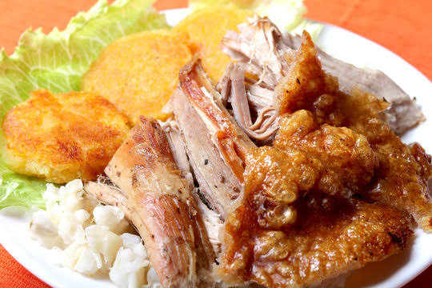

Tutorial de Hornado

Ingredientes básicos
- Para la carne: 1 pierna o paletilla de cerdo (de 4 a 5 kg) con su piel.
- Para el aliño: 15 dientes de ajo, 2 cebollas coloradas, 1 atado de cebolla blanca, 1 cucharada de comino, 1 cucharada de sal, 1 cucharadita de pimienta y 1 cucharada de orégano seco.
- Para el horneado: 1 taza y media de chicha de jora (o cerveza rubia) y ½ taza de manteca de cerdo derretida mezclada con achiote en polvo.
Preparación del Hornado
- Limpiar y pinchar la carne: Haz incisiones profundas en la parte interna de la carne (sin cortar la piel) para que penetren los sabores.
- Frota un limón por toda la pieza para limpiar impurezas.
- Licuar el aliño tradicional:
- Procesa en la licuadora los ajos, las cebollas, el comino, la sal, la pimienta, el orégano y un chorrito de agua o chicha.
- Marinar (Paso crucial):
- Unta este aliño por toda la carne y dentro de los cortes.
- Coloca la pieza en una bandeja, cúbrela y déjala reposar en el refrigerador durante 24 horas.
- Primer horneado (Carne tierna):
- Saca el cerdo de la nevera, añade el resto de la chicha de jora o cerveza en la bandeja.
- Cubre la carne por completo con papel aluminio.
- Hornea a 190 °C durante unas 3 horas (aproximadamente 40 minutos por cada kilo).
- Segundo horneado (Cuero crocante):
- Retira el papel aluminio.
- Barniza la piel con la mezcla de manteca de cerdo y achiote.
- Sube la temperatura a 200 °C con la función de grill (calor arriba) durante 25 a 30 minutos, bañando la carne con sus propios jugos de vez en cuando, hasta que el cuero reviente y quede totalmente crujiente